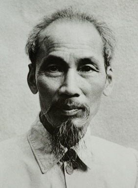
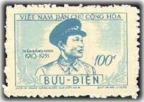
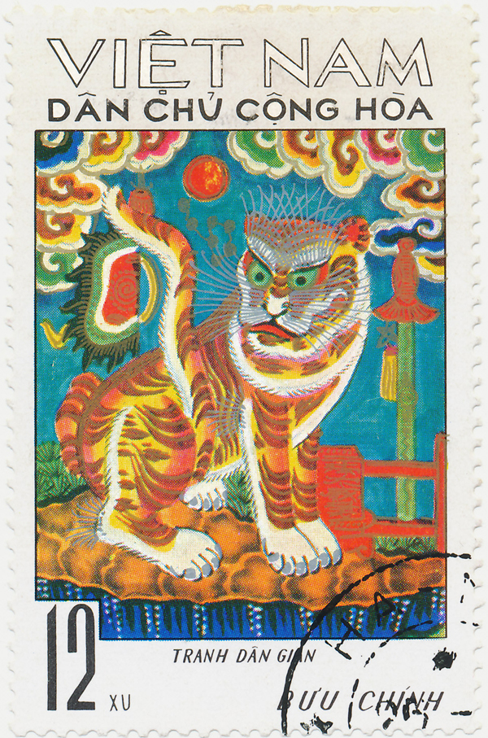
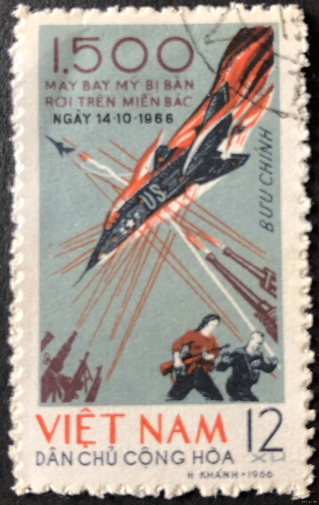
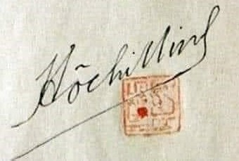

Căn cứ: Bài giảng Tư tưởng Hồ Chí Minh — Chương 1, Chương 2, Chương 3
Bộ môn Tư tưởng Hồ Chí Minh · Trường Đại học Thủy lợi
Tư tưởng Hồ Chí Minh về chủ nghĩa xã hội · Tính tất yếu của việc tiến lên chủ nghĩa xã hội ở Việt Nam
Mục 1.1.1 · 2.2.5 · 3.2.1
Tính chất, đặc điểm và nhiệm vụ của thời kỳ quá độ
Mục 3.2.3.1
Nội dung xây dựng chủ nghĩa xã hội trong thời kỳ quá độ ở nước ta
a) Trong lĩnh vực chính trị · b) Trong lĩnh vực kinh tế · c) Trong lĩnh vực tư tưởng, văn hoá, xã hội
Mục 3.2.3.2
Nguyên tắc và biện pháp xây dựng chủ nghĩa xã hội trong thời kỳ quá độ
Mục 3.2.3.3
“…kết quả sự vận dụng sáng tạo chủ nghĩa Mác-Lênin trong điều kiện cụ thể của nước ta” · Vận dụng tư tưởng Hồ Chí Minh về độc lập dân tộc gắn liền với chủ nghĩa xã hội trong sự nghiệp cách mạng Việt Nam giai đoạn hiện nay
Mục 1.1.1 · 3.2 · 3.2.2 · 3.4

Tư tưởng Hồ Chí Minh về chủ nghĩa xã hội và xây dựng chủ nghĩa xã hội ở Việt Nam bao quát những vấn đề cốt lõi, cơ bản nhất trên cơ sở vận dụng và phát triển sáng tạo học thuyết Mác-Lênin.
Thời gian, cách thức, tốc độ tiến lên chủ nghĩa xã hội ở mỗi quốc gia, dân tộc diễn ra một cách khác nhau nhưng đó là một quá trình tất yếu, tuân theo những quy luật khách quan, trước hết là các quy luật trong sản xuất vật chất.
Hồ Chí Minh đã khẳng định, con đường cách mạng Việt Nam là tiến hành giải phóng dân tộc, hoàn thành cách mạng dân tộc dân chủ nhân dân, tiến dần lên chủ nghĩa xã hội.
Chủ nghĩa xã hội là xã hội thuộc giai đoạn đầu của chủ nghĩa Cộng sản, một xã hội không còn áp bức, bóc lột, do nhân dân lao động làm chủ, trong đó con người sống ấm no, tự do, hạnh phúc…
là một cuộc cách mạng làm đảo lộn mọi mặt của đời sống xã hội cả lực lượng sản xuất, quan hệ sản xuất, kiến trúc thượng tầng. … Như trong Di chúc, Hồ Chí Minh đã coi sự nghiệp xây dựng chủ nghĩa xã hội là một cuộc chiến đấu khổng lồ của toàn Đảng và toàn dân ta.
là công việc mới mẻ đối với Đảng ta, phải vừa làm, vừa học, vừa rút kinh nghiệm. Đảng, nhà nước và nhân dân ta chưa có nhiều kinh nghiệm, nhất là trên lĩnh vực kinh tế.
sự nghiệp của chúng ta bị các thế lực phản động trong và ngoài nước tìm cách chống phá.
Hồ Chí Minh luôn nhắc nhở cán bộ, đảng viên trong xây dựng chủ nghĩa xã hội phải thận trọng, tránh nôn nóng, chủ quan, đốt cháy giai đoạn. Vấn đề là phải xác định đúng bước đi và hình thức phù hợp với trình độ lực lượng sản xuất, biết kết hợp các khâu trung gian, quá độ, tuần tự từng bước, từ thấp đến cao.
Đặc điểm to nhất của ta trong thời kỳ quá độ là từ một nước nông nghiệp lạc hậu tiến thẳng lên chủ nghĩa xã hội không phải kinh qua giai đoạn phát triển tư bản chủ nghĩa.
• nhiệm vụ quan trọng nhất của thời kỳ quá độ là phải xây dựng nền tảng vật chất và kỹ thuật của chủ nghĩa xã hội;
• xây dựng tiền đề về kinh tế, chính trị, văn hóa, tư tưởng cho chủ nghĩa xã hội;
• cải tạo xã hội cũ, xây dựng xã hội mới, đưa miền Bắc tiến dần lên chủ nghĩa xã hội, có công nghiệp và nông nghiệp hiện đại, có văn hóa và khoa học tiên tiến.
Lưu ý…trước hết và quan trọng nhất là sự lãnh đạo của Đảng Cộng sản và khối đại đoàn kết toàn dân tộc để thực hiện thắng lợi nhiệm vụ của thời kỳ quá độ.
giữ vững và phát huy vai trò lãnh đạo của Đảng Cộng sản,
củng cố và mở rộng mặt trận dân tộc thống nhất, nòng cốt là liên minh công nhân, nông dân, trí thức do Đảng Cộng sản lãnh đạo;
củng cố tăng cường sức mạnh của toàn bộ hệ thống chính trị và các thành tố của nó.
Người quan niệm lấy nông nghiệp làm mặt trận hàng đầu,
củng cố thương nghiệp làm cầu nối tốt nhất giữa các ngành sản xuất xã hội;
(Mục 3.2.2.1) thương nghiệp đưa hàng đến nông thôn phục vụ cho nông dân, thương nghiệp đưa nông sản, nguyên liệu cho thành thị tiêu dùng.
xây dựng cơ cấu kinh tế ngành, cơ cấu các thành phần kinh tế, cơ cấu vùng kinh tế và lãnh thổ.
TríchKẻ thù muốn đè bẹp ta về kinh tế thay bằng quân sự, vì vậy ta phải phát triển kinh tế.
Nước ta cần ưu tiên phát triển kinh tế quốc doanh để tạo nền tảng vật chất cho chủ nghĩa xã hội, thúc đẩy việc cải tạo xã hội chủ nghĩa.
là hình thức sở hữu tập thể của nhân dân lao động, Nhà nước cần đặc biệt khuyến khích, hướng dẫn và giúp đỡ nó phát triển. … Hồ Chí Minh nhấn mạnh nguyên tắc dần dần, từ thấp đến cao, tự nguyện, cùng có lợi, chống chủ quan, gò ép, hình thức.
Nhà nước bảo hộ quyền sở hữu về tư liệu sản xuất, ra sức hướng dẫn và giúp họ cải tiến cách làm ăn, khuyến khích họ đi vào con đường hợp tác.
Nhà nước không xóa bỏ quyền sở hữu về tư liệu sản xuất và của cải khác của họ, … khuyến khích và giúp đỡ họ cải tạo theo chủ nghĩa xã hội bằng hình thức tư bản nhà nước.
Chủ trương đa dạng hoá các loại hình sở hữu về tư liệu sản xuất, Nhà nước bảo hộ quyền sở hữu về tư liệu sản xuất;
đồng thời coi trọng quan hệ phân phối và quản lý kinh tế, sử dụng hình thức và phương tiện của chủ nghĩa tư bản để xây dựng chủ nghĩa xã hội.
Trong quản lý kinh tế phải dựa trên cơ sở hạch toán đem lại hiệu quả cao, sử dụng tốt các đòn bảy trong phát triển sản xuất.
Người chủ trương chỉ rõ các điều kiện thực hiện nguyên tắc phân phối theo lao động: làm nhiều hưởng nhiều, làm ít hưởng ít, không làm không hưởng.
Hồ Chí Minh cũng bước đầu đề cập đến vấn đề khoán trong sản xuất. Theo Người, chế độ khoán là một điều kiện của chủ nghĩa xã hội, nó khuyến khích người công nhân luôn luôn tiến bộ cho nhà máy tiến bộ, làm khoán là ích chung và lợi riêng.
Khoánphải khắc phục sự yếu kém về kiến thức, sự bấp bênh về chính trị, sự trì trệ về kinh tế, lạc hậu về văn hoá, … là khe hở mà chủ nghĩa tư bản dễ dàng lợi dụng.
…nếu không có tư tưởng xã hội chủ nghĩa thì không làm việc xã hội chủ nghĩa được.
muốn xây dựng chủ nghĩa xã hội, trước hết phải có học thức, cần phải học văn hóa, chính trị, kỹ thuật … Người cũng coi trọng nâng cao dân trí, đào tạo và sử dụng nhân tài, khẳng định vai trò to lớn của văn hóa trong đời sống xã hội.

mọi tư tưởng, hành động phải được thực hiện trên nền tảng chủ nghĩa Mác-Lênin.
…phải cụ thể hóa chủ nghĩa Mác-Lênin cho thích hợp với điều kiện hoàn cảnh từng lúc và từng nơi.
phải giữ vững độc lập dân tộc.
…độc lập dân tộc là điều kiện tiên quyết để thực hiện chủ nghĩa xã hội và chủ nghĩa xã hội là cơ sở bảo đảm vững chắc cho độc lập dân tộc…
phải đoàn kết, học tập kinh nghiệm của các nước.
…không được áp đặt những kinh nghiệm ấy một cách máy móc mà phải vận dụng nó một cách sáng tạo.
Độc lập dân tộc và chủ nghĩa xã hội luôn luôn gắn liền với nhau, làm tiền đề, điều kiện đảm bảo cho nhau phát triển.
Thực hiện cải tạo xã hội cũ, xây dựng xã hội mới, kết hợp cải tạo với xây dựng, xây dựng làm chính.
Kết hợp xây dựng với bảo vệ, tiến hành hai nhiệm vụ chiến lược khác nhau trong phạm vi một quốc gia.
Xây dựng chủ nghĩa xã hội phải có kế hoạch, biện pháp, quyết tâm thực hiện thắng lợi kế hoạch.
Trong điều kiện nước ta, biện pháp cơ bản quyết định lâu dài trong xây dựng chủ nghĩa xã hội là phải huy động hết các nguồn lực vốn có trong dân để làm lợi cho dân dưới sự lãnh đạo của Đảng Cộng sản Việt Nam.

…từ một nước nông nghiệp lạc hậu tiến thẳng lên chủ nghĩa xã hội không phải kinh qua giai đoạn phát triển tư bản chủ nghĩa.
…phải thận trọng, tránh nôn nóng, chủ quan, đốt cháy giai đoạn… tuần tự từng bước, từ thấp đến cao.
Hồ Chí Minh là người đầu tiên chủ trương phát triển cơ cấu kinh tế nhiều thành phần trong suốt thời kỳ quá độ…
lấy nông nghiệp làm mặt trận hàng đầu · công nghiệp và nông nghiệp là hai chân của nền kinh tế nước nhà.
sử dụng hình thức và phương tiện của chủ nghĩa tư bản để xây dựng chủ nghĩa xã hội · bước đầu đề cập đến vấn đề khoán trong sản xuất.
củng cố và mở rộng mặt trận dân tộc thống nhất, nòng cốt là liên minh công nhân, nông dân, trí thức do Đảng Cộng sản lãnh đạo.
muốn cải tạo xã hội chủ nghĩa thì phải cải tạo chính mình · văn hóa phải xã hội chủ nghĩa về nội dung và dân tộc về hình thức.
động lực quan trọng và quyết định nhất là con người, nhân dân lao động, nòng cốt là liên minh công - nông - trí thức · huy động hết các nguồn lực vốn có trong dân để làm lợi cho dân.
Việt Nam có thể đi con đường khác để tiến lên chủ nghĩa xã hội · Kết hợp xây dựng với bảo vệ, tiến hành hai nhiệm vụ chiến lược khác nhau trong phạm vi một quốc gia.
…chỉ ra yếu tố kìm hãm, triệt tiêu nguồn lực vốn có của chủ nghĩa xã hội. Đó là: … chủ nghĩa cá nhân - kẻ thù hung ác của chủ nghĩa xã hội; tham ô lãng phí - bạn đồng minh của thực dân phong kiến; bè phái mất đoàn kết nội bộ… mà Người gọi là giặc nội xâm.
Những luận điểm đó là tài sản vô giá, là cơ sở lý luận, kim chỉ nam…
Kiên định mục tiêu và con đường cách mạng mà Hồ Chí Minh đã xác định
Phát huy sức mạnh dân chủ xã hội chủ nghĩa
Củng cố, kiện toàn, phát huy sức mạnh và hiệu quả hoạt động của toàn bộ hệ thống chính trị
Đấu tranh chống những biểu hiện suy thoái về tư tưởng chính trị; suy thoái về đạo đức, lối sống và “tự diễn biến”, “tự chuyển hóa” trong nội bộ
Hoài bãoDân giàu, nước mạnh, xã hội công bằng, dân chủ, văn minh
“Toàn Đảng, toàn dân ta đoàn kết phấn đấu, xây dựng một nước Việt Nam hoà bình, thống nhất, độc lập, dân chủ và giàu mạnh, và góp phần xứng đáng vào sự nghiệp cách mạng thế giới”
